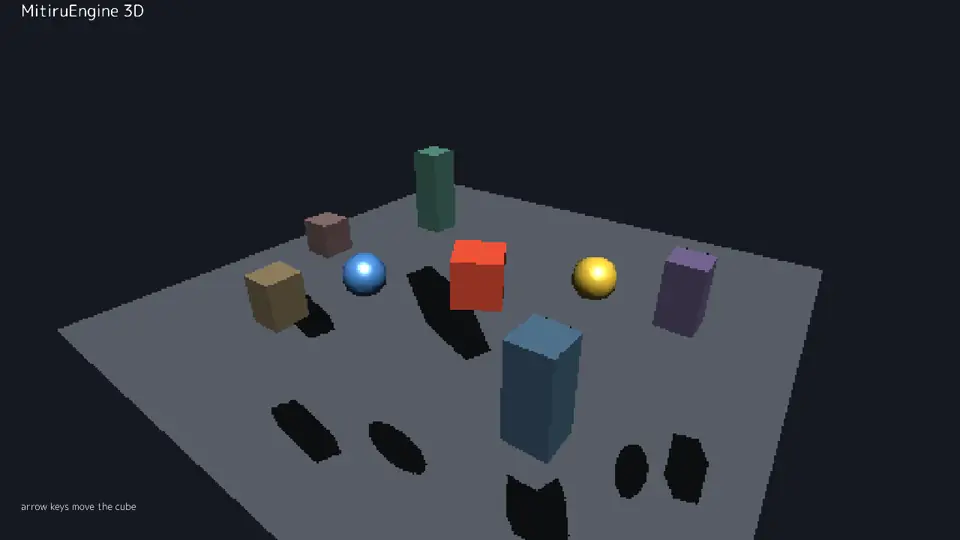
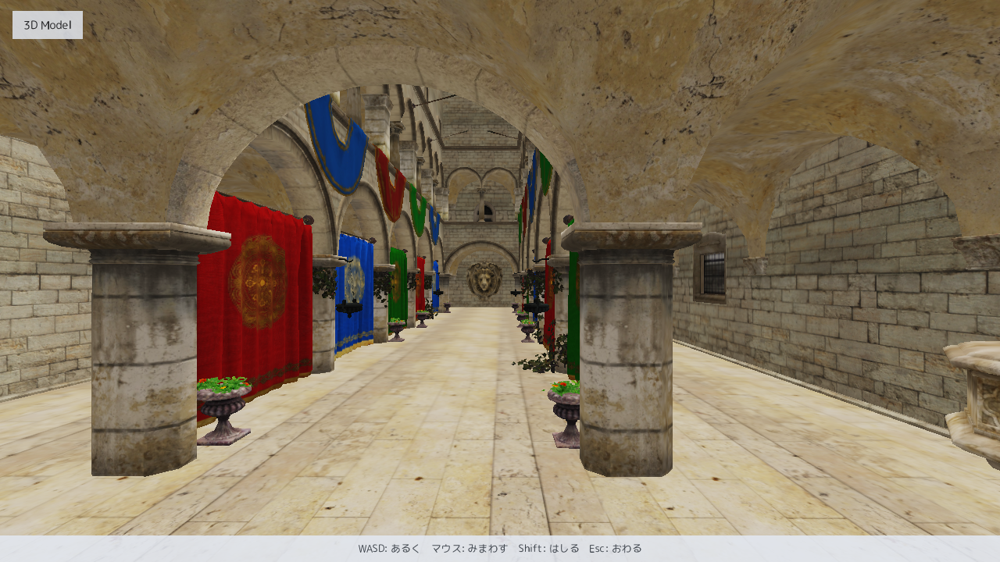

MitiruEngine
MitiruEngine
3D
2D と組み合わせられる 3D 表示
MitiruEngine は、GPU による 3D 描画に対応しています。C++ の draw(Screen&) でカメラ、光、メッシュを指定し、文字や HUD は 2D で重ねられます。

scene3d の録画です。GPU 3D レンダラーによる MSAA とシャドウマップ、矢印キーによる操作、2D HUD の重ね合わせを確認できます。描画の流れ
s.camera3D でカメラを設定し、s.light3D で平行光の向きを指定します。続いて s.drawMesh を呼ぶと、組み込みメッシュの立方体、球、板を配置できます。
3D は GPU 3D レンダラーが MSAA とシャドウマップ付きで描画します。その後に s.text などを呼び、HUD やメニューを 2D で重ねます。
draw(Screen&) の中で 3D を描画し、その上に 2D HUD を重ねます。座標の向き
座標は右手系で、Y が上、1 単位が 1 m です。カメラが -Z を向くと +X が画面の右に、+Z を向くと +X が画面の左に出ます。camera3D を呼ばないときは、目 (6, 5, 8) から (0, 0.5, 0) を見下ろす既定の視点になります。

画面の右へ動かしたいときは、+X を足すのではなく、カメラの視線と上の外積 (視線 × 上) を足します。3D アクションのカメラリグでは cameraRigRight がこの向きを返します。詳しくは3D アクションを作るにあります。
C++ の例
ゲームの状態は struct に数値として保持し、update で更新、draw で描画します。次の例では、時刻と立方体の位置を状態として保存しています。
#include <mitiru.hpp>
#include <cmath>
using namespace mitiru;
struct Hello3D {
float t = 0;
float cubeX = 0;
float cubeZ = 0;
void update(Input in, float dt) {
t += dt;
if (in.down(Key::Left)) {
cubeX -= 4.5f * dt;
}
if (in.down(Key::Right)) {
cubeX += 4.5f * dt;
}
}
void draw(Screen& s) {
s.clear(hex(0x111521));
float yaw = t * 0.3f;
s.camera3D(
{std::sin(yaw) * 13, 8.5f, std::cos(yaw) * 13},
{0, 0.4f, 0},
54
);
s.light3D({-0.5f, -1, -0.4f});
s.drawMesh(
"cube",
{0, -0.15f, 0},
{14, 0.3f, 14},
{0, 0, 0},
hex(0x3A4250)
);
s.drawMesh(
"cube",
{cubeX, 0.7f, cubeZ},
{1.4f, 1.4f, 1.4f},
{0, t * 60, 0},
hex(0xEA5535)
);
s.drawMesh(
"sphere",
{2.7f, 0.9f, 0},
{1.2f, 1.2f, 1.2f},
{0, 0, 0},
hex(0x4C95F2)
);
s.text(
"MitiruEngine 3D",
28,
22,
color::White,
30
);
}
};
MITIRU_GAME(Hello3D)
完全版はリポジトリの examples/scene3d/ にあります。上の録画も、このサンプルを実行したものです。
この例で保存するゲーム状態は、時刻 t と立方体の位置です。ポインタを含まない数値だけの struct を保存、復元する仕組みにより、同じ入力から同じ結果を再現します。詳細は同じ入力なら同じ結果を参照してください。
モデルファイルを表示する
Blender などから書き出した .gltf、.glb、.obj は、s.drawModel に渡せます。初回起動時に変換キャッシュを隣へ作成し、次回以降はそのキャッシュを読み込みます。
詳細度は距離に応じて GPU 上で自動選択されます。元のページに掲載された例では、26 万ポリゴンのモデルを使用しています。
// 26 万ポリゴンのモデルを配置する
s.drawModel(
"assets/sponza/sponza.gltf",
{0, 0, 0},
0.0f,
0.01f
);

model3d の実行画面です。Crytek Sponza の glTF モデルを drawModel で配置し、マウスと WASD で移動できます。詳しくはサンプル集を参照してください。灯りを置く、キャラクターに姿勢を付ける
s.pointLight3D と s.spotLight3D で点光源とスポットライトを置けます。呼ぶたびに足され、1 フレームに 1024 個まで受け付けます。スポットライトは影も落とせます。同じ形をたくさん並べるときは s.drawMeshInstanced で 1 回にまとめます。
// 赤い灯りと、影を落とすスポットライト
s.pointLight3D({-2, 1, 0}, 4.0f, hex(0xFF5A3C), 3.0f);
s.spotLight3D({0, 9, 0}, {0, -1, 0}, 14.0f, 10.0f, 18.0f,
hex(0xFFF2D0), 6.0f, /*castShadow=*/true);
リグ付きのモデルは、どのクリップを何秒で、どれだけ混ぜるかを AnimPoseParams に並べ、配置の行列と一緒に s.drawModelPose へ渡します。頭を目標へ向ける、足を地面に置くといった IK は AnimIkRequest で頼みます。ゲームが当たり判定のために同じ計算で骨の位置を出せるので、描いた骨と判定の骨はずれません。
animation::AnimPoseParams pose;
animation::pushLayer(pose, {walkClip, -1, animation::kAnimLayerLoop, 0, 0, t, 1.0f});
s.drawModelPose("assets/fox.glb", world, &pose, &lookAt, 1);
同梱サンプル lights3d と anim3d で実際に動かせます。2 つを使ったゲームの組み立て方は、3D アクションを作るの連載にまとめています。
現在の対応範囲
| 組み込みメッシュ | 立方体、球、板 |
|---|---|
| モデル形式 | .gltf、.glb、.obj |
| 描画 | MSAA / FXAA / TAA、シャドウマップ、点光源とスポットライト、半透明（WBOIT）、skybox、物理ベースの空、体積フォグ、動きのぼけ、剣筋、自動 LOD、インスタンス描画 |
| 2D との組み合わせ | 3D 描画の上に文字、HUD、メニューを重ねられます |
| 状態の保存 | 録画、巻き戻し、リプレイ、ホットリロード |
| 3D アクション | 当たり判定、キャラクター、カメラ、骨格アニメ、敵の AI、物理の巻き戻し。3D アクションを作るで順に説明しています |
はじめてのゲーム
struct、update、draw を使う基本構成を確認できます。
機能リファレンス
図形、文字、画像、入力、音、演出の機能を確認できます。
画面を作る
HUD やメニューには HTML / CSS を利用できます。
状態の再現、巻き戻し、AI 連携については乱数・巻き戻し・AI 連携も参照してください。